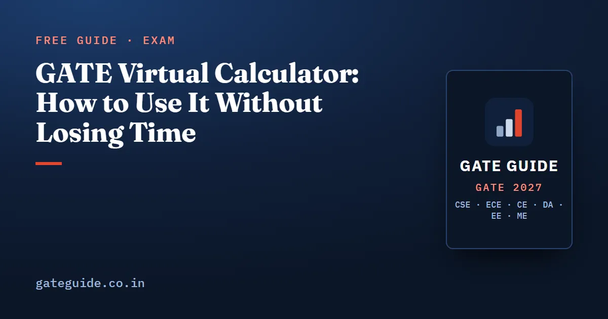

GATE Virtual Calculator: How to Use It Without Losing Time

GATE gives you a scientific calculator on screen and bans every physical one, so the calculator you will use in February is one you have probably never touched. It is slower than the one on your desk, it takes functions in the opposite order, and it has no undo. Ten minutes of practice a week from now is worth more than any last-week panic, because the cost of not knowing it is measured in minutes, and a GATE CSE paper gives you about 2 minutes 45 seconds per question.
In this guide
Key takeaways
- The official brochure says a virtual scientific calculator is provided on screen and that candidates must use only that calculator. Physical calculators are prohibited.
- The brochure also says the calculator and mock examination links will be available through gate2027.iitm.ac.in. Practise on the official version.
- Value first, then function. Key in 35, then press sin. This is the opposite of most phone calculators.
- Memory keys are MS (store), MR (recall), MC (clear), M+ (add to memory), M- (subtract from memory).
- Press C before starting a fresh calculation. Leftover state is the most common source of a wrong second answer.
- Most GATE CSE arithmetic does not need the calculator at all. Knowing when to skip it is the real time saving.
What the calculator is, officially
The GATE 2027 Information Brochure states that a virtual scientific calculator will be available on the computer screen, that candidates must use only the on-screen calculator, and that the calculator, the previous year question papers and mock examination links will be accessible through the GATE 2027 official website. Nothing else is official yet, so treat any third-party clone as an approximation and switch to the official build as soon as it appears. GATE Guide is an independent site, not connected to IIT Madras or the GATE office.
Two things about the interface are consistently described. There are two display boxes at the top: one echoes the keys or expression you entered, the other shows the current value or result. The scientific functions sit on the left of the keypad, the ordinary arithmetic keys on the right.
Whether the physical keyboard can be used to type digits varies between descriptions, so do not plan around it. Assume mouse clicks, and confirm the behaviour on the official mock test when it goes live.
The one habit that matters most: function order
On the GATE calculator you enter the operand and then press the function key.
| You want | You press |
|---|---|
35 then sin |
|
4096 then log |
|
2 then the root key |
|
12, the power key, 2.2, = |
|
20, the power key, 2, sign change, = |
Getting this backwards wastes a few seconds each time, and worse, it puts a number on screen that looks plausible. Drill it until the order is automatic.
There is no base-2 logarithm key, which matters for Computer Science more than for any other paper. Cache index bits, B+ tree heights, minimum flip-flops for a mod- counter and complexity comparisons all want . Use change of base, with either log or ln used on both:
Better still, memorise the powers of 2 up to and most of these questions stop needing the calculator at all.
Memory keys, and where they actually help
| Key | What it does |
|---|---|
| MS | Store the displayed number in memory |
| MR | Recall the stored number to the display |
| MC | Clear the memory |
| M+ | Add the displayed number to memory |
| M- | Subtract the displayed number from memory |
The point of memory is not elegance, it is avoiding transcription. Consider a two-level cache question where you need the average memory access time. You compute the level-2 contribution, store it with MS, compute the level-1 hit time, and recall the stored value with MR instead of writing 0.0473 on the scribble pad and typing it back with a digit transposed. The same applies to effective access time with a TLB, to pipeline cycle counts and to TCP throughput questions where one bracketed quantity reappears twice.
M+ is useful for running totals: Huffman code lengths, total waiting time across five processes, or the marks-weighted CPI sum of an instruction mix. Enter each term, press M+, and read the total once with MR.
The five slips that cost time and marks
1. Not clearing between questions. Press C before every fresh calculation. A value left in the display or an unclosed bracket silently poisons the next answer. Clearing memory with MC between questions is equally cheap insurance.
2. Order of operations. The calculator applies its own precedence, which may not match the order you are reading off your scribble pad. Do not type a long expression in one go. Use brackets liberally, or break the expression into two or three stored steps. A cache size expression like is far safer as three short calculations than one long keystroke chain.
3. Unit slips. This is where CSE candidates lose the most. Nanoseconds against microseconds, bits against bytes, KB as 1000 or 1024, Mbps as bits per second while memory sizes use powers of two. The calculator will happily return a wrong answer to five decimal places. Write the unit next to every number on the scribble pad before you touch the keypad.
4. Rounding too early. Carry full precision through intermediate steps and round only at the final answer, to whatever the question specifies. GATE NAT answers are typically integers or two-decimal values, and the paper states the rounding. Rounding a hit ratio to two decimals in step one can move a final throughput figure outside the accepted range.
5. Using it when you should not. Most GATE CSE questions are logical, not arithmetical. Tag and index bits, closure of a set of functional dependencies, a precedence graph, a DFA state count, a Master theorem case: none of these need a calculator, and opening it breaks your reading rhythm. The subject-by-subject traps are collected in common mistakes that cost marks in GATE CSE, and the formulas worth having in your head are in the GATE CSE formula sheet.
How to practise it
Do not practise the calculator on its own for an hour. Practise it inside timed work, so the switching cost is part of what you train.
- From today, run every numerical on screen. Whenever you solve a page of cache, pipeline, scheduling or networking problems, use an on-screen scientific calculator instead of a physical one.
- Time the switch. Notice how long it takes to move from reading the question to a usable number. If it is more than a few seconds, the sequence is not automatic yet.
- Build a personal keystroke card. Five sequences you use often: , with a negative exponent, factorial, reciprocal, percentage. Write them once, use them until you do not need the card.
- Move to the official version as soon as it is published on gate2027.iitm.ac.in, and run at least two full mock tests with it. Mock discipline is covered in GATE CSE mock tests: how to take and analyse them.
- Decide your no-calculator list. Powers of two, small factorials, log base 2 of common sizes and simple fractions should never reach the keypad.
The GATE CSE 2027 book builds this in: every worked solution shows the intermediate values in the order you would store and recall them, so the arithmetic is drilled with the calculator's own workflow rather than against it. See what the CSE book covers, or the books for every branch.
One more exam day rule to remember
The calculator is provided, but nothing else is. Rough work goes on invigilator-issued scribble pads, you may hold only one at a time, and physical calculators, phones and watches are prohibited outright. The complete list is in GATE 2027 admit card and exam day rules, and how to budget the three hours across 65 questions is in GATE CSE exam day time management.
Frequently asked questions
Is a physical calculator allowed in GATE 2027?
No. The official GATE 2027 Information Brochure states that a virtual scientific calculator will be available on the computer screen and that candidates must use only the on-screen calculator for their calculations. Physical calculators are on the prohibited list, and possession alone can lead to disqualification even if you never use one.
Where can I practise with the GATE virtual calculator?
The official brochure says the virtual scientific calculator, previous year question papers and mock examination links will be accessible through the GATE 2027 official website. Use that version when it is published, because third-party clones can differ in key behaviour. Practise inside full mock tests rather than on its own.
How do I calculate sin or log on the GATE virtual calculator?
Enter the value first, then press the function key. To get sin of 35, key in 35 and then press sin. This is the reverse of many phone calculators, where you press the function first. The same order applies to log, ln, square root and the reciprocal key, so drill it before the exam.
How do I compute log base 2 on the GATE calculator?
There is no dedicated base-2 key. Use the change-of-base identity: , using either the base-10 log key or the natural log key consistently. For GATE CSE this comes up in cache index bits, B+ tree heights and complexity questions, so practise the keystroke sequence.
What do the MC, MR, MS, M+ and M- keys do?
MS stores the displayed number in memory, MR recalls it, MC clears it, M+ adds the displayed number to whatever is in memory and M- subtracts it. In multi-step numericals, storing an intermediate value beats writing it down and typing it back in, which is where transcription errors usually enter.
How many decimals should I enter for a GATE NAT answer?
Follow the instruction in the question. GATE NAT answers are typically integers or values rounded to two decimal places, and the paper states the required rounding. Carry full precision through your intermediate steps and round only at the final key press, because rounding early can push an answer outside the accepted range.
Sources
- GATE 2027 official website (IIT Madras)
- GATE 2027 Information Brochure (official PDF)
- GATE 2027 question paper pattern (official)
- Physics Wallah, GATE virtual calculator features and keys
- Testbook, GATE virtual calculator guide
- MADE EASY, what the GATE virtual calculator is and how to use it
Dates, fees and the syllabus are set by the GATE 2027 organising institute and can change. Always confirm at gate2027.iitm.ac.in.